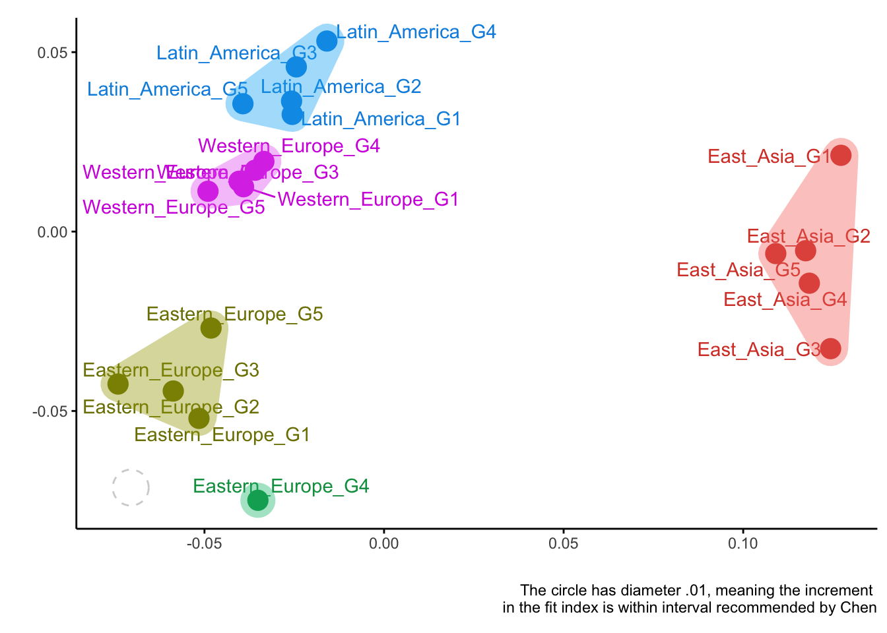
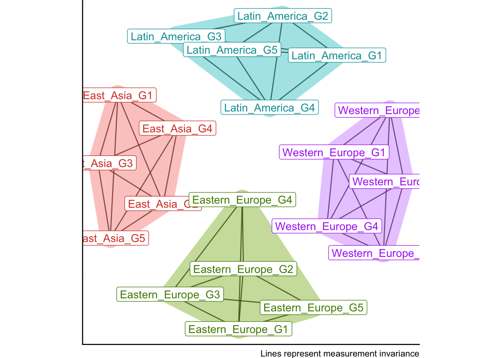

library(MIE)
library(dplyr)
library(reshape2)
library(lavaan)Finding clusters of groups with invariant measurement
Comparing psychological constructs, attitudes, or behaviors across groups is one of the most common goals in social and behavioral research. We often want to know whether a latent factor, such as well-being or math anxiety, has the same meaning across populations, cultures, or time points. Before comparing latent means or structural paths, we must ensure that the construct is measured in the same way across groups.
Let’s say you have been developing a measurement scale and at some point you have tested measurement invariance, and the test has failed. You suspect that some groups are non-invariant, but you don’t know which ones. Moreover, if you have many groups, manually testing all pairwise combinations is not feasible. One of a few solutions is to use the multiple groups alignment (or more generally penalized SEM), but it may not be available for your model or software. More flexible solution is to use the Measurement Invariance Explorer (MIE) application, which allows you to explore which groups are similar in terms of measurement model parameters (or even more observed covariances/correlations).
If a factor loading or intercept differs from one group to another, the scale or the origin of the latent variable changes. Observed differences may then reflect differences in how the construct is measured, rather than true differences in the construct itself.
Traditionally, researchers test measurement invariance through a sequence of multiple-group confirmatory factor analysis (MGCFA) models that impose increasing constraints: the configural model (same structure), the metric model (equal loadings), and the scalar model (equal loadings and intercepts). When fit indices remain stable across these steps, invariance is supported.
However, this approach becomes cumbersome when the number of groups increases, as in large cross-national surveys or longitudinal studies with many waves. Even alignment methods (Muthén & Asparouhov, 2013, 2014), which optimize parameters to minimize non-invariance, assume that most parameters are invariant — an assumption that may not always hold.
The Measurement Invariance Explorer (MIE) package provides a new perspective. Instead of strict hypothesis testing, it offers an exploratory and visual framework that helps users detect patterns of similarity and dissimilarity among groups. It complements confirmatory analysis by revealing which groups are similar, which ones differ, and how large those differences are.
Example - clusters of groups
To illustrate the idea, we will use simulated data emulating a short scale of political efficacy. It has two factors with four items each:
F1 =~ v1 + v2 + v3 + v4;
F2 =~ v11 + v12 + v13 + v14;We have 20 countries (with 500 observations in each) and there are 4 regions of countries (East Asia, Western Europe, Eastern Europe, and Latin America), each with different factor loadings. Within each region, countries have similar measurement parameters, but these parameters differ across regions, so true factor loadings are:
Parameter Western_Europe Eastern_Europe Latin_America East_Asia
1 F1 by v1 1 1.0 1.0 1.0
2 F1 by v2 1 0.4 0.4 0.4
3 F1 by v3 1 0.3 0.7 0.1
4 F1 by v4 1 0.2 0.7 1.0
5 F2 by v11 1 1.0 1.0 1.0
6 F2 by v12 1 0.4 0.4 0.4
7 F2 by v13 1 0.3 0.7 0.1
8 F2 by v14 1 0.2 0.7 1.0The issue is that we don’t know in advance, that these 4 regions exist, and which countries belong to which region. We only know that we have 20 countries.
Conventional tests of invariance would show that there is no metric invariance, as expected. MIE has a convenient function for this:
global_mi_test = globalMI(
model = 'F1 =~ v1 + v2 + v3 + v4;
F2 =~ v11 + v12 + v13 + v14;',
group = "group",
data = sim_data,
what = c("cfi", "rmsea", "srmr"),
quiet = T
)
global_mi_test$fit %>% round(3) cfi diff.cfi rmsea diff.rmsea srmr diff.srmr
configural 1.000 NA 0.000 NA 0.023 NA
metric 0.854 -0.146 0.082 0.082 0.076 0.053
scalar 0.852 -0.002 0.075 -0.008 0.077 0.002Comparing CFI and RMSEA across models shows that metric invariance is not supported. What should we do next? Some of our options are:
- find a subset of parameters which is invariant across all groups;
- partial invariance (relax some constraints, but not less than two per each factor - Byrne, Shavelson, & Muthen, 1989);
- approximate invariance (relax strict equality of parameters, Bayesian zero priors on differences);
- find a subset of groups:
- alignment method (Muthen & Asparouhov, 2013, 2014a, 2014b), minimizing non-invariance by finding convenient factor means and variances (available only in Mplus), however: “The assumption of the alignment method is that a majority of the parameters are invariant and a minority of the parameters are non-invariant.” (Muthen & Asparouhov, 2013); the new PSEM approach may help overcome this limitation but a lot is unknown yet.
- repeatedly re-run MGCFA model with different subsets of groups - this is the approach that is made easy in MIE.
All these methods could be useful, but they all have limitations. Partial invariance may not be feasible if too many parameters are non-invariant, approximate invariance requires Bayesian estimation which may not be available for your model or software, and alignment assumes that most parameters are invariant.
So let’s try stratified invarince methodology.
Finding clusters of groups with MIE
The Measurement Invariance Explorer (MIE) package provides a new perspective. Instead of strict hypothesis testing, it offers an exploratory and visual framework that helps users detect patterns of similarity and dissimilarity among groups. It complements confirmatory analyses by revealing which groups are similar, which ones differ, and how large those differences are. The general idea is to compute some measure of “invariance distance” between each pair of groups, and then use multidimensional scaling (MDS) to visualize these distances in two dimensions and/or clusterize groups. Groups that are close together in the plot are more similar in terms of measurement parameters, while those that are far apart are more dissimilar.
MIE provides many measures of “invariance distance” which can be split into three categories: no measurement model implied (very crude measures based on correlations and covariances), when measurement model implied and we focus on measurement parameters (loadings and intercepts), and based on changes in fit indices of pairwise models. Below is a brief overview of these measures.
No measurement model implied
- Covariances (no model implied) Commonly used multidimensional scaling (MDS) of all available indicators. Two dimensions are extracted.
- Correlations (no model implied) After applying Fisher’s z transformation, the distances are computed, sent to MDS and plotted. If the model fits data well, correlations/covariances and model parameters should differ across groups in a similar way.
Parameters in a global model
Parameters: loadings (configural MGCFA) A single multiple group confirmatory factor analysis with non-constrained factor loadings and intercepts. It extracts loadings, and uses them to compute distance matrix, which is then scaled and plotted.
Parameters: intercepts (metric MGCFA) Analogous to previous one, but loadings are constrained and free intercepts are used as a measure of distance between groups.
Change in fit indices of pairwise models
- Change in fit indices from configural to metric model
- Configural and metric MGCFA models are fitted to subsamples of every possible pair of groups.
- Global fit indices are extracted and their change between the two models is computed, they reflect “invariance distances” between each pair of groups.
- Without further transformations, CFI, RMSEA, or SRMR for each pair of groups are used to compute two-dimensional scaling and plot the group points.
- Change in fit indices from metric to scalar model Analogous to previous one, only metric and scalar models are fitted to the pairs of groups.
All these measures have their pro and cons For example, change in fit indices can be problematic because CFA, RMSEA, and SRMR, as well as their increments do not have known distributions, while calculation of distance assumes normality. Nevertheless, they all may be useful in practice, depending on the data and the research question.
NB. There is also very promising approach called dMACs but it’s not implemented in MIE yet.
Let’s see how MIE works with our simulated data. We need to pick the measure, calculate it, and plot the results. First we will use correlations, next loadings, and finally CFI as measures of distance between groups.
corrs <- getMetrics(
group = "group",
data = sim_data,
metric = "correlation")
plotDistances(corrs)
Optimal number of clusters is 4
all_loadings <- getMetrics(
model = 'F1 =~ v1 + v2 + v3 + v4;
F2 =~ v11 + v12 + v13 + v14;',
group = "group",
data = sim_data,
metric = "parameters",
parameters = "loadings"
)
plotDistances(all_loadings)
Optimal number of clusters is 4
CFIs = getMetrics(
model = 'F1 =~ v1 + v2 + v3 + v4;
F2 =~ v11 + v12 + v13 + v14;',
group = "group",
data = sim_data,
metric = "fit",
level = "metric",
quiet = T
)
plotDistances(CFIs)
Optimal number of clusters is 5
Alternatively, we may use a cutoff value rather than a continuous distance to form clusters and show on the plot. For CFI, a cutoff of 0.01 is often used in invariance testing (e.g., following Chen, 2007).
plotDistances(CFIs, cutoff = 0.01)
Overall, all three measures have managed to recover the true clusters of groups quite well. Correlations and loadings did a perfect job, while CFI made a minor mistake (group Eastern_Europe_G4 was misplaced).
Now, that we found clusters of similar groups, we can run a stratified MGCFA models on these clusters to test for invariance within each cluster. There is a convenience function for this too:
# first, let's get the strata based on CFI distances
distance_plot <- plotDistances(CFIs, cutoff = 0.01)
# You can automate getting clusters, for example, like this,
# but it's recommended to visually inspect the plot and define clusters manually.
# lapply(setNames(nm=unique(distance_plot$data$cluster)), function(x) {
# distance_plot$data$group[distance_plot$data$cluster == x]
# })
stratifiedMI(
model = 'F1 =~ v1 + v2 + v3 + v4;
F2 =~ v11 + v12 + v13 + v14;',
group = "group",
data = sim_data,
strata = list("East_Asia" = c("East_Asia_G1", "East_Asia_G2", "East_Asia_G3", "East_Asia_G4", "East_Asia_G5"),
"Eastern_Europe" = c("Eastern_Europe_G1", "Eastern_Europe_G2", "Eastern_Europe_G3", "Eastern_Europe_G4", "Eastern_Europe_G5"),
"Latin_America" = c("Latin_America_G1", "Latin_America_G2", "Latin_America_G3", "Latin_America_G4", "Latin_America_G5"),
"Western_Europe" = c("Western_Europe_G1", "Western_Europe_G2", "Western_Europe_G3", "Western_Europe_G4", "Western_Europe_G5"))
)
cfi tli rmsea srmr bic df cfi tli rmsea srmr bic
fits[[ref]] 1 1 0.000 0.023 254337 380
fits[["clustered"]] 1 1 0.003 0.035 252526 604 0 -0.003 0.003 0.012 -1811
df
fits[[ref]]
fits[["clustered"]] 224The results show that within each cluster, metric invariance holds very well (CFI remains high and stable, RMSEA and SRMR are low while df is drastically different). This confirms that the clusters identified by MIE are meaningful in terms of measurement invariance.
Comparison with other approaches
Let’s go quickly through some other options available with the same dataset.
1. Partial invariance
Before we can fit the partial metric model we need to identify what parameters are non-invariant.
Let’s use the metric model already fitted in the previous step and run a score test. It is available in lavaan through lavTestScore function, but its output is not very user-friendly. MIE provides a wrapper version of the output through lavTestScore_clean function. (Note, both take a substantial time to compute, ~1-2min in this case).
score_test = lavTestScore_clean(global_mi_test$models$metric)
head(score_test$uni)
Chi-square test of releasing single constraints, equivalent to modification indices
Term Group1 Group2 Chi.square df p.value .
1 F1=~v2 East_Asia_G1 East_Asia_G5 0.981 1 0.322
2 F1=~v3 East_Asia_G1 East_Asia_G5 91.762 1 0.000 ***
3 F1=~v4 East_Asia_G1 East_Asia_G5 20.226 1 0.000 ***
4 F2=~v12 East_Asia_G1 East_Asia_G5 4.100 1 0.043 *
5 F2=~v13 East_Asia_G1 East_Asia_G5 42.148 1 0.000 ***
6 F2=~v14 East_Asia_G1 East_Asia_G5 15.037 1 0.000 ***The table is very long and it is tedious to look through all of it. To get a quick overview of which parameters are most non-invariant across groups, we can aggregate the score test statistics by group:
score_test$uni %>%
group_by(Term) %>%
summarize(Chi.square.sum = sum(Chi.square)) %>%
arrange(desc(Chi.square.sum))# A tibble: 6 × 2
Term Chi.square.sum
<chr> <dbl>
1 F1=~v3 470.
2 F2=~v13 318.
3 F1=~v4 251.
4 F2=~v14 217.
5 F1=~v2 174.
6 F2=~v12 145.Now we have to rerun the model with partial invariance, freeing the most non-invariant parameters. Let’s free loadings of v3, v13, v4, and v12 – these were the groups with the highest score test statistics for these parameters and it’s the maximum number of free loadings we could afford in a partial invariance model (recall that partial metric invariance requires at least two invariant loadings).
global_mi_test2 = globalMI(
model = 'F1 =~ v1 + v2 + v3 + v4;
F2 =~ v11 + v12 + v13 + v14;',
group = "group",
data = sim_data,
partial = c("F1=~v3", "F2=~v13", "F1=~v4", "F2=~v12"),
omit = 'scalar',
what = c("cfi", "rmsea", "srmr"),
quiet = T
)
global_mi_test2$fit %>% round(3) cfi diff.cfi rmsea diff.rmsea srmr diff.srmr
configural 1.000 NA 0.000 NA 0.023 NA
metric 0.854 -0.146 0.082 0.082 0.076 0.053
partial.metric 0.961 0.107 0.046 -0.036 0.046 -0.030The fit has improved, but still not enough to claim metric invariance. Moreover, we had to make a lot of decisions along the way (which parameters to free, how many of them, etc), which makes the process subjective and not very reproducible. Overall, this approach doesn’t work here because (we know it) all the loadings are non-invariant, wo relaxing constraints on some of them won’t help.
So maybe alignment could help?
2. Alignment method
The alignment method is available in Mplus, and it’s getting more and more flexible. The idea is to find factor loadings and intercepts that minimize non-invariance across groups. However, as mentioned before, it assumes that most parameters are invariant, which is not the case here. Still, let’s see what happens. Running alignment may involve multiple steps (see an in-depth alignment tutorial), but MIE automates its typical steps.
align_res = runAlignment(
model = 'F1 BY v1 v2 v3 v4;
F2 BY v11 v12 v13 v14;',
group = "group",
dat = sim_data,
Mplus_com = "/Applications/Mplus/mplus",
sim.samples = NULL,
path = tempdir(),
summaries = T
)
align_res$fixed$summary %>%
filter(grepl("Loadings", row.names(.))) %>%
select(3:6) N_invariant N_noninvariant
Loadings F1 by V1 18 2
Loadings F1 by V2 19 1
Loadings F1 by V3 14 6
Loadings F1 by V4 15 5
Loadings F2 by V11 20 0
Loadings F2 by V12 20 0
Loadings F2 by V13 11 9
Loadings F2 by V14 15 5
invariant.gr
Loadings F1 by V1 1 2 3 4 5 6 7 8 9 10 11 12 13 14 15 17 18 19
Loadings F1 by V2 1 2 3 4 5 6 7 8 9 10 11 12 13 14 15 17 18 19 20
Loadings F1 by V3 6 7 8 10 11 12 13 14 15 16 17 18 19 20
Loadings F1 by V4 1 2 3 4 5 11 12 13 14 15 16 17 18 19 20
Loadings F2 by V11 1 2 3 4 5 6 7 8 9 10 11 12 13 14 15 16 17 18 19 20
Loadings F2 by V12 1 2 3 4 5 6 7 8 9 10 11 12 13 14 15 16 17 18 19 20
Loadings F2 by V13 10 11 12 13 14 15 16 17 18 19 20
Loadings F2 by V14 1 2 3 4 5 11 12 13 14 15 16 17 18 19 20
non.invar.gr
Loadings F1 by V1 16 20
Loadings F1 by V2 16
Loadings F1 by V3 2 3 4 5 9 1
Loadings F1 by V4 6 7 8 9 10
Loadings F2 by V11
Loadings F2 by V12
Loadings F2 by V13 2 3 4 5 6 7 8 9 1
Loadings F2 by V14 6 7 8 9 10As we can see, the alignment has not managed to identify groups with non-invariant loadings very well. It approached a part of the true pattern, for example, for loading on V4 and V14 it indicated groups 6-10 which is indeed the largest outlier in terms of its loadings, but the remaining patterns are blurred. This is expected, given that the assumption of most parameters being invariant is violated.
To sum up, MIE provides a flexible and visual framework to explore measurement invariance across many groups. It can help identify clusters of similar groups when traditional methods struggle. However, it is exploratory in nature and should be complemented with confirmatory analyses.